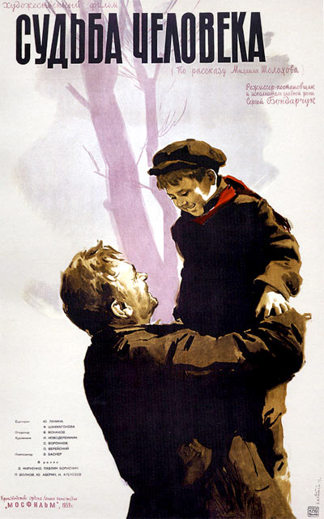
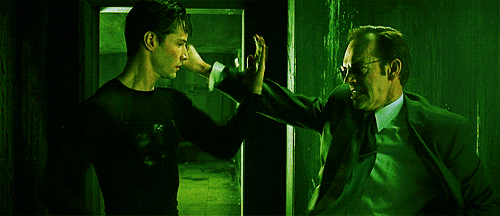

С чего начался кинематограф?
Film, «плёнка», также кино́, кинофи́льм, телефи́льм, кинокарти́на — отдельное произведение киноискусства. В технологическом плане фильм представляет собой совокупность движущихся изображений (монтажных кадров), связанных единым сюжетом. Кинемато́граф — отрасль человеческой деятельности, заключающаяся в создании движущихся изображений. Иногда также упоминается как синемато́граф и кинематогра́фия. Название заимствовано у одноимённого аппарата, изобретённого братьями Люмьер и положившего начало коммерческому использованию технологии.
Киноиндустрия - это мощное средство культурного выражения, развлечения и воздействия на общество. Она прошла долгий путь эволюции, начиная с первых немых фильмов и до современных технологических чудес. Ниже я рассмотрю ключевые этапы развития киноиндустрии.
Признанными изобретателями кинематографа стали французы, братья Луи и Огюст Люмьеры. Аппаратура Люмьеров оказалась очень удобной, с её помощью можно было легко снимать и демонстрировать фильмы на большом экране, что и предопределило успех их изобретения."Кинематограф" (или "синематограф") - именно так называлось устройство Люмьеров. Днём рождения кино считается другая дата, 28 декабря 1895 г., когда состоялся первый коммерческий киносеанс. В своих сеансах Люмьеры демонстрировали несколько коротких (всего 50 сек.) роликов, первыми из которых был "Выход рабочих с фабрики", "Прибытие поезда”.
Начальный этап развития кино
После гениального изобретения Люмьеров был кинематограф, но ещё не было кино. Люмьеры считали, что главная функция их изобретения - запись и сохранение кинохроники для потомков. Однако ещё и в отсутствие сюжетного кино кинематограф быстро набирал популярность. К 1910 г. 70% фильмов всё ещё производилось во Франции. Однако другие страны, в первую очередь, такие как США, Великобритания, Германия также начинают оказывать заметное влияние на развитие мирового кино. К 1910 появляется немало фильмов с продолжительностью около часа, а в 1915 г. американец Гриффит снимает фильм "Рождение нации" продолжительностью уже целых 3 часа. Этот фильм принёс ему огромные кассовые сборы. Одними из наиболее успешных из продукции американского кинематографа в 1920-е стали комедии, особенно с участием Чарли Чаплина. Российское кино до революции шло в основном по пути копирования западных образцов. Однако в 20-е советские режиссёры начинают сами активно экспериментировать с выразительными возможностями кино.Находки некоторых режиссёров, вошли в золотой фонд мирового киноискусства.
До 1927 г. все фильмы были "немыми", они содержали лишь изображение, без звука. В начале 1920-х появляется первая система, способная записывать и воспроизводить звуковое кино, однако кинопроизводители долго осторожничают, опасаясь значительно удорожания производства и проката фильмов. Первой на эксперимент решается американская фирма "Уорнер Бразерс". В 1927 г. она выпускает первый фильм, в котором персонаж на экране разговаривает. Приход в кино звука несколько уменьшает роль приёмов художественной выразительности. Некоторые известные режиссёры и актёры (в т. ч. Чарли Чаплин) выступали против звукового кино либо за то, чтобы звук не мешал их изобразительным экспериментам, но звук быстро завоевал место в кино, и на протяжении 30-х почти все фильмы стали звуковыми. В СССР (и особенно в Германии) режиссёры испытывали давление со стороны режима, что также ограничивало возможность к экспериментированию. В СССР была сделана ставка на "социалистический реализм" и создание меньшего числа, но с более высоким качеством, фильмов. (1956г.). В послевоенное время (конец 40-х и 50-е) существенный вклад в развитие мирового кино внесли итальянский, а также японский кинематограф.
Развитие цветного кино
Внедрение цвета в кино происходило медленнее, чем внедрение звука. Технические возможности создания удовлетворительного цветного кино появились ещё в 30-е, а в 1939 г. в США был снят один из первых цветных фильмов, завоевавший огромную популярность - "Унесённые ветром", но устойчивый перевес цветных фильмов перед чёрно-белыми стал складываться лишь в 60-70е. Впоследствии под давлением конкуренции со стороны телевидения в США ещё более усиливается тенденция к созданию дорогих, с большим числом спецэффектов и декораций, фильмов - "блокбастеров". Последние, самые значительные нововведения в кино связаны с началом широкого использования компьютерной графики, причём не только в тех случаях и сценах, где изобразить что-то обычными средствами затруднительно, но и практически везде. Одним из наиболее передовых в плане тотального использования компьютерной графики оказался фильм "Матрица", и компьютерные эффекты, (наряду с неординарным и глубоко продуманным сценарием) обеспечили фильму огромный успех. Сейчас компьютерная графика, позволяет легко осуществлять незаметное на экране "смешивание" снятого с натуры и привнесённого при помощи компьютера изображения.
